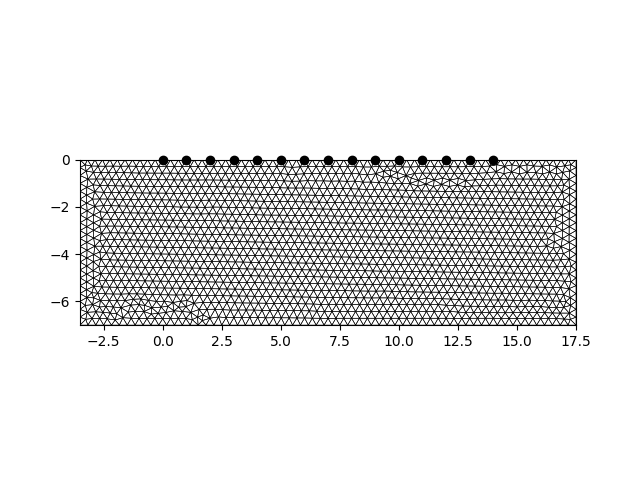
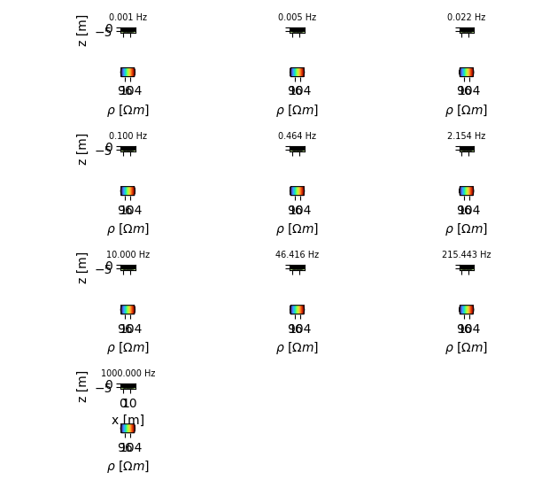
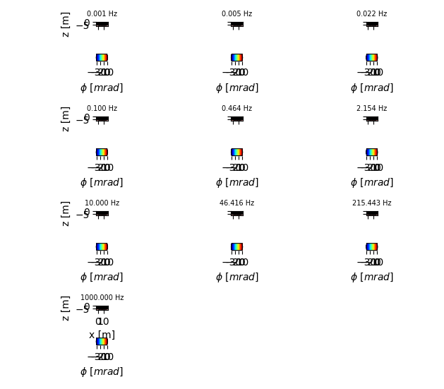

Note
Click here to download the full example code
Generating sEIT forward models
The eit manager can be used to easily create forward models using different parameterizations.
imports
import numpy as np
import crtomo
import reda
we need a FE grid
grid = crtomo.crt_grid.create_surface_grid(nr_electrodes=15, spacing=1)
grid.plot_grid()

Out:
This grid was sorted using CutMcK. The nodes were resorted!
Triangular grid found
define frequencies
frequencies = np.logspace(-3, 3, 10)
# create the eit manager
eitman = crtomo.eitMan(frequencies=frequencies, grid=grid)
start with a homogeneous complex resistivity distribution
eitman.add_homogeneous_model(magnitude=100, phase=0)
r = eitman.plot_forward_models(maglim=[90, 110])
# r['rmag']['fig'].show()
# save to files
# with reda.CreateEnterDirectory('output_gen_seit_model'):
# # magnitude
# r['rmag']['fig'].savefig('fwd_model_hom_rmag.png', dpi=300)
# r['rmag']['fig'].show()

- with reda.CreateEnterDirectory(‘output_gen_seit_model’):
# phase r[‘rpha’][‘fig’].savefig(‘fwd_model_hom_rpha.png’, dpi=300)
now we can start parameterizing the subsurface
eitman.set_area_to_single_colecole(
0, 5, -2, 0,
[100, 0.1, 0.04, 0.8]
)
r = eitman.plot_forward_models(maglim=[90, 110], phalim=[-30, 0])
# save to files
with reda.CreateEnterDirectory('output_gen_seit_model'):
r['rmag']['fig'].savefig('fwd_model_par_rmag.png', dpi=300)
r['rpha']['fig'].savefig('fwd_model_par_rpha.png', dpi=300)


add configurations
configs = np.array((
(1, 3, 5, 4),
(5, 7, 10, 8),
))
eitman.add_to_configs(configs)
conduct forward modeling
Out:
attempting modeling
b' ######### CMod ############\nLicence:\nCopyright \xc2\xa9 1990-2020 Andreas Kemna <kemna@geo.uni-bonn.de>\nCopyright \xc2\xa9 2008-2020 CRTomo development team (see AUTHORS file)\nPermission is hereby granted, free of charge, to any person obtaining a copy of\nthis software and associated documentation files (the \xe2\x80\x9cSoftware\xe2\x80\x9d), to deal in\nthe Software without restriction, including without limitation the rights to\nuse, copy, modify, merge, publish, distribute, sublicense, and/or sell copies\nof the Software, and to permit persons to whom the Software is furnished to do\nso, subject to the following conditions:\n\nThe above copyright notice and this permission notice shall be included in all\ncopies or substantial portions of the Software.\n\nTHE SOFTWARE IS PROVIDED \xe2\x80\x9cAS IS\xe2\x80\x9d, WITHOUT WARRANTY OF ANY KIND, EXPRESS OR\nIMPLIED, INCLUDING BUT NOT LIMITED TO THE WARRANTIES OF MERCHANTABILITY,\nFITNESS FOR A PARTICULAR PURPOSE AND NONINFRINGEMENT. IN NO EVENT SHALL THE\nAUTHORS OR COPYRIGHT HOLDERS BE LIABLE FOR ANY CLAIM, DAMAGES OR OTHER\nLIABILITY, WHETHER IN AN ACTION OF CONTRACT, TORT OR OTHERWISE, ARISING FROM,\nOUT OF OR IN CONNECTION WITH THE SOFTWARE OR THE USE OR OTHER DEALINGS IN THE\nSOFTWARE.\n \n \n CRMod Process_ID :: 97662\n OpenMP max threads: 4\n Git-Branch master\n Commit-ID 85c7db34c4d77d51aa595704ccccff586eff89c8\n Created Wed-May-13-08:58:54-2020\n Compiler \n OS GNU/Linux\n\n Reading Input-Files\n++ check 1\r++ check 2 done!\n\rGetting voltage 1\rGetting voltage 2 No electrode cap file\n \n Rescheduling..\n less nodes than wavenumbers\n OpenMP threads: 3( 4)\n\n\r Calculating Potentials : Wavenumber 3 \r Calculating Potentials : Wavenumber 3 \r Calculating Potentials : Wavenumber 3 \r Calculating Potentials : Wavenumber 4 \r Calculating Potentials : Wavenumber 5 \r Calculating Potentials : Wavenumber 6 \r Calculating Potentials : Wavenumber 7 \r Calculating Potentials : Wavenumber 8 done, now processing\n solution time 0d/ 0h/ 0m/ 0s/ 95ms\n\n Modelling completedSTOP 0\n'
reading voltages
attempting modeling
b' ######### CMod ############\nLicence:\nCopyright \xc2\xa9 1990-2020 Andreas Kemna <kemna@geo.uni-bonn.de>\nCopyright \xc2\xa9 2008-2020 CRTomo development team (see AUTHORS file)\nPermission is hereby granted, free of charge, to any person obtaining a copy of\nthis software and associated documentation files (the \xe2\x80\x9cSoftware\xe2\x80\x9d), to deal in\nthe Software without restriction, including without limitation the rights to\nuse, copy, modify, merge, publish, distribute, sublicense, and/or sell copies\nof the Software, and to permit persons to whom the Software is furnished to do\nso, subject to the following conditions:\n\nThe above copyright notice and this permission notice shall be included in all\ncopies or substantial portions of the Software.\n\nTHE SOFTWARE IS PROVIDED \xe2\x80\x9cAS IS\xe2\x80\x9d, WITHOUT WARRANTY OF ANY KIND, EXPRESS OR\nIMPLIED, INCLUDING BUT NOT LIMITED TO THE WARRANTIES OF MERCHANTABILITY,\nFITNESS FOR A PARTICULAR PURPOSE AND NONINFRINGEMENT. IN NO EVENT SHALL THE\nAUTHORS OR COPYRIGHT HOLDERS BE LIABLE FOR ANY CLAIM, DAMAGES OR OTHER\nLIABILITY, WHETHER IN AN ACTION OF CONTRACT, TORT OR OTHERWISE, ARISING FROM,\nOUT OF OR IN CONNECTION WITH THE SOFTWARE OR THE USE OR OTHER DEALINGS IN THE\nSOFTWARE.\n \n \n CRMod Process_ID :: 97666\n OpenMP max threads: 4\n Git-Branch master\n Commit-ID 85c7db34c4d77d51aa595704ccccff586eff89c8\n Created Wed-May-13-08:58:54-2020\n Compiler \n OS GNU/Linux\n\n Reading Input-Files\n++ check 1\r++ check 2 done!\n\rGetting voltage 1\rGetting voltage 2 No electrode cap file\n \n Rescheduling..\n less nodes than wavenumbers\n OpenMP threads: 3( 4)\n\n\r Calculating Potentials : Wavenumber 3 \r Calculating Potentials : Wavenumber 3 \r Calculating Potentials : Wavenumber 3 \r Calculating Potentials : Wavenumber 4 \r Calculating Potentials : Wavenumber 5 \r Calculating Potentials : Wavenumber 6 \r Calculating Potentials : Wavenumber 7 \r Calculating Potentials : Wavenumber 8 done, now processing\n solution time 0d/ 0h/ 0m/ 0s/ 91ms\n\n Modelling completedSTOP 0\n'
reading voltages
attempting modeling
b' ######### CMod ############\nLicence:\nCopyright \xc2\xa9 1990-2020 Andreas Kemna <kemna@geo.uni-bonn.de>\nCopyright \xc2\xa9 2008-2020 CRTomo development team (see AUTHORS file)\nPermission is hereby granted, free of charge, to any person obtaining a copy of\nthis software and associated documentation files (the \xe2\x80\x9cSoftware\xe2\x80\x9d), to deal in\nthe Software without restriction, including without limitation the rights to\nuse, copy, modify, merge, publish, distribute, sublicense, and/or sell copies\nof the Software, and to permit persons to whom the Software is furnished to do\nso, subject to the following conditions:\n\nThe above copyright notice and this permission notice shall be included in all\ncopies or substantial portions of the Software.\n\nTHE SOFTWARE IS PROVIDED \xe2\x80\x9cAS IS\xe2\x80\x9d, WITHOUT WARRANTY OF ANY KIND, EXPRESS OR\nIMPLIED, INCLUDING BUT NOT LIMITED TO THE WARRANTIES OF MERCHANTABILITY,\nFITNESS FOR A PARTICULAR PURPOSE AND NONINFRINGEMENT. IN NO EVENT SHALL THE\nAUTHORS OR COPYRIGHT HOLDERS BE LIABLE FOR ANY CLAIM, DAMAGES OR OTHER\nLIABILITY, WHETHER IN AN ACTION OF CONTRACT, TORT OR OTHERWISE, ARISING FROM,\nOUT OF OR IN CONNECTION WITH THE SOFTWARE OR THE USE OR OTHER DEALINGS IN THE\nSOFTWARE.\n \n \n CRMod Process_ID :: 97670\n OpenMP max threads: 4\n Git-Branch master\n Commit-ID 85c7db34c4d77d51aa595704ccccff586eff89c8\n Created Wed-May-13-08:58:54-2020\n Compiler \n OS GNU/Linux\n\n Reading Input-Files\n++ check 1\r++ check 2 done!\n\rGetting voltage 1\rGetting voltage 2 No electrode cap file\n \n Rescheduling..\n less nodes than wavenumbers\n OpenMP threads: 3( 4)\n\n\r Calculating Potentials : Wavenumber 3 \r Calculating Potentials : Wavenumber 3 \r Calculating Potentials : Wavenumber 3 \r Calculating Potentials : Wavenumber 4 \r Calculating Potentials : Wavenumber 5 \r Calculating Potentials : Wavenumber 6 \r Calculating Potentials : Wavenumber 7 \r Calculating Potentials : Wavenumber 8 done, now processing\n solution time 0d/ 0h/ 0m/ 0s/ 90ms\n\n Modelling completedSTOP 0\n'
reading voltages
attempting modeling
b' ######### CMod ############\nLicence:\nCopyright \xc2\xa9 1990-2020 Andreas Kemna <kemna@geo.uni-bonn.de>\nCopyright \xc2\xa9 2008-2020 CRTomo development team (see AUTHORS file)\nPermission is hereby granted, free of charge, to any person obtaining a copy of\nthis software and associated documentation files (the \xe2\x80\x9cSoftware\xe2\x80\x9d), to deal in\nthe Software without restriction, including without limitation the rights to\nuse, copy, modify, merge, publish, distribute, sublicense, and/or sell copies\nof the Software, and to permit persons to whom the Software is furnished to do\nso, subject to the following conditions:\n\nThe above copyright notice and this permission notice shall be included in all\ncopies or substantial portions of the Software.\n\nTHE SOFTWARE IS PROVIDED \xe2\x80\x9cAS IS\xe2\x80\x9d, WITHOUT WARRANTY OF ANY KIND, EXPRESS OR\nIMPLIED, INCLUDING BUT NOT LIMITED TO THE WARRANTIES OF MERCHANTABILITY,\nFITNESS FOR A PARTICULAR PURPOSE AND NONINFRINGEMENT. IN NO EVENT SHALL THE\nAUTHORS OR COPYRIGHT HOLDERS BE LIABLE FOR ANY CLAIM, DAMAGES OR OTHER\nLIABILITY, WHETHER IN AN ACTION OF CONTRACT, TORT OR OTHERWISE, ARISING FROM,\nOUT OF OR IN CONNECTION WITH THE SOFTWARE OR THE USE OR OTHER DEALINGS IN THE\nSOFTWARE.\n \n \n CRMod Process_ID :: 97674\n OpenMP max threads: 4\n Git-Branch master\n Commit-ID 85c7db34c4d77d51aa595704ccccff586eff89c8\n Created Wed-May-13-08:58:54-2020\n Compiler \n OS GNU/Linux\n\n Reading Input-Files\n++ check 1\r++ check 2 done!\n\rGetting voltage 1\rGetting voltage 2 No electrode cap file\n \n Rescheduling..\n less nodes than wavenumbers\n OpenMP threads: 3( 4)\n\n\r Calculating Potentials : Wavenumber 3 \r Calculating Potentials : Wavenumber 3 \r Calculating Potentials : Wavenumber 3 \r Calculating Potentials : Wavenumber 4 \r Calculating Potentials : Wavenumber 5 \r Calculating Potentials : Wavenumber 6 \r Calculating Potentials : Wavenumber 7 \r Calculating Potentials : Wavenumber 8 done, now processing\n solution time 0d/ 0h/ 0m/ 0s/ 90ms\n\n Modelling completedSTOP 0\n'
reading voltages
attempting modeling
b' ######### CMod ############\nLicence:\nCopyright \xc2\xa9 1990-2020 Andreas Kemna <kemna@geo.uni-bonn.de>\nCopyright \xc2\xa9 2008-2020 CRTomo development team (see AUTHORS file)\nPermission is hereby granted, free of charge, to any person obtaining a copy of\nthis software and associated documentation files (the \xe2\x80\x9cSoftware\xe2\x80\x9d), to deal in\nthe Software without restriction, including without limitation the rights to\nuse, copy, modify, merge, publish, distribute, sublicense, and/or sell copies\nof the Software, and to permit persons to whom the Software is furnished to do\nso, subject to the following conditions:\n\nThe above copyright notice and this permission notice shall be included in all\ncopies or substantial portions of the Software.\n\nTHE SOFTWARE IS PROVIDED \xe2\x80\x9cAS IS\xe2\x80\x9d, WITHOUT WARRANTY OF ANY KIND, EXPRESS OR\nIMPLIED, INCLUDING BUT NOT LIMITED TO THE WARRANTIES OF MERCHANTABILITY,\nFITNESS FOR A PARTICULAR PURPOSE AND NONINFRINGEMENT. IN NO EVENT SHALL THE\nAUTHORS OR COPYRIGHT HOLDERS BE LIABLE FOR ANY CLAIM, DAMAGES OR OTHER\nLIABILITY, WHETHER IN AN ACTION OF CONTRACT, TORT OR OTHERWISE, ARISING FROM,\nOUT OF OR IN CONNECTION WITH THE SOFTWARE OR THE USE OR OTHER DEALINGS IN THE\nSOFTWARE.\n \n \n CRMod Process_ID :: 97678\n OpenMP max threads: 4\n Git-Branch master\n Commit-ID 85c7db34c4d77d51aa595704ccccff586eff89c8\n Created Wed-May-13-08:58:54-2020\n Compiler \n OS GNU/Linux\n\n Reading Input-Files\n++ check 1\r++ check 2 done!\n\rGetting voltage 1\rGetting voltage 2 No electrode cap file\n \n Rescheduling..\n less nodes than wavenumbers\n OpenMP threads: 3( 4)\n\n\r Calculating Potentials : Wavenumber 3 \r Calculating Potentials : Wavenumber 3 \r Calculating Potentials : Wavenumber 3 \r Calculating Potentials : Wavenumber 4 \r Calculating Potentials : Wavenumber 5 \r Calculating Potentials : Wavenumber 6 \r Calculating Potentials : Wavenumber 7 \r Calculating Potentials : Wavenumber 8 done, now processing\n solution time 0d/ 0h/ 0m/ 0s/ 90ms\n\n Modelling completedSTOP 0\n'
reading voltages
attempting modeling
b' ######### CMod ############\nLicence:\nCopyright \xc2\xa9 1990-2020 Andreas Kemna <kemna@geo.uni-bonn.de>\nCopyright \xc2\xa9 2008-2020 CRTomo development team (see AUTHORS file)\nPermission is hereby granted, free of charge, to any person obtaining a copy of\nthis software and associated documentation files (the \xe2\x80\x9cSoftware\xe2\x80\x9d), to deal in\nthe Software without restriction, including without limitation the rights to\nuse, copy, modify, merge, publish, distribute, sublicense, and/or sell copies\nof the Software, and to permit persons to whom the Software is furnished to do\nso, subject to the following conditions:\n\nThe above copyright notice and this permission notice shall be included in all\ncopies or substantial portions of the Software.\n\nTHE SOFTWARE IS PROVIDED \xe2\x80\x9cAS IS\xe2\x80\x9d, WITHOUT WARRANTY OF ANY KIND, EXPRESS OR\nIMPLIED, INCLUDING BUT NOT LIMITED TO THE WARRANTIES OF MERCHANTABILITY,\nFITNESS FOR A PARTICULAR PURPOSE AND NONINFRINGEMENT. IN NO EVENT SHALL THE\nAUTHORS OR COPYRIGHT HOLDERS BE LIABLE FOR ANY CLAIM, DAMAGES OR OTHER\nLIABILITY, WHETHER IN AN ACTION OF CONTRACT, TORT OR OTHERWISE, ARISING FROM,\nOUT OF OR IN CONNECTION WITH THE SOFTWARE OR THE USE OR OTHER DEALINGS IN THE\nSOFTWARE.\n \n \n CRMod Process_ID :: 97685\n OpenMP max threads: 4\n Git-Branch master\n Commit-ID 85c7db34c4d77d51aa595704ccccff586eff89c8\n Created Wed-May-13-08:58:54-2020\n Compiler \n OS GNU/Linux\n\n Reading Input-Files\n++ check 1\r++ check 2 done!\n\rGetting voltage 1\rGetting voltage 2 No electrode cap file\n \n Rescheduling..\n less nodes than wavenumbers\n OpenMP threads: 3( 4)\n\n\r Calculating Potentials : Wavenumber 2 \r Calculating Potentials : Wavenumber 3 \r Calculating Potentials : Wavenumber 3 \r Calculating Potentials : Wavenumber 4 \r Calculating Potentials : Wavenumber 5 \r Calculating Potentials : Wavenumber 6 \r Calculating Potentials : Wavenumber 7 \r Calculating Potentials : Wavenumber 8 done, now processing\n solution time 0d/ 0h/ 0m/ 0s/ 92ms\n\n Modelling completedSTOP 0\n'
reading voltages
attempting modeling
b' ######### CMod ############\nLicence:\nCopyright \xc2\xa9 1990-2020 Andreas Kemna <kemna@geo.uni-bonn.de>\nCopyright \xc2\xa9 2008-2020 CRTomo development team (see AUTHORS file)\nPermission is hereby granted, free of charge, to any person obtaining a copy of\nthis software and associated documentation files (the \xe2\x80\x9cSoftware\xe2\x80\x9d), to deal in\nthe Software without restriction, including without limitation the rights to\nuse, copy, modify, merge, publish, distribute, sublicense, and/or sell copies\nof the Software, and to permit persons to whom the Software is furnished to do\nso, subject to the following conditions:\n\nThe above copyright notice and this permission notice shall be included in all\ncopies or substantial portions of the Software.\n\nTHE SOFTWARE IS PROVIDED \xe2\x80\x9cAS IS\xe2\x80\x9d, WITHOUT WARRANTY OF ANY KIND, EXPRESS OR\nIMPLIED, INCLUDING BUT NOT LIMITED TO THE WARRANTIES OF MERCHANTABILITY,\nFITNESS FOR A PARTICULAR PURPOSE AND NONINFRINGEMENT. IN NO EVENT SHALL THE\nAUTHORS OR COPYRIGHT HOLDERS BE LIABLE FOR ANY CLAIM, DAMAGES OR OTHER\nLIABILITY, WHETHER IN AN ACTION OF CONTRACT, TORT OR OTHERWISE, ARISING FROM,\nOUT OF OR IN CONNECTION WITH THE SOFTWARE OR THE USE OR OTHER DEALINGS IN THE\nSOFTWARE.\n \n \n CRMod Process_ID :: 97689\n OpenMP max threads: 4\n Git-Branch master\n Commit-ID 85c7db34c4d77d51aa595704ccccff586eff89c8\n Created Wed-May-13-08:58:54-2020\n Compiler \n OS GNU/Linux\n\n Reading Input-Files\n++ check 1\r++ check 2 done!\n\rGetting voltage 1\rGetting voltage 2 No electrode cap file\n \n Rescheduling..\n less nodes than wavenumbers\n OpenMP threads: 3( 4)\n\n\r Calculating Potentials : Wavenumber 3 \r Calculating Potentials : Wavenumber 3 \r Calculating Potentials : Wavenumber 3 \r Calculating Potentials : Wavenumber 4 \r Calculating Potentials : Wavenumber 5 \r Calculating Potentials : Wavenumber 6 \r Calculating Potentials : Wavenumber 7 \r Calculating Potentials : Wavenumber 8 done, now processing\n solution time 0d/ 0h/ 0m/ 0s/ 92ms\n\n Modelling completedSTOP 0\n'
reading voltages
attempting modeling
b' ######### CMod ############\nLicence:\nCopyright \xc2\xa9 1990-2020 Andreas Kemna <kemna@geo.uni-bonn.de>\nCopyright \xc2\xa9 2008-2020 CRTomo development team (see AUTHORS file)\nPermission is hereby granted, free of charge, to any person obtaining a copy of\nthis software and associated documentation files (the \xe2\x80\x9cSoftware\xe2\x80\x9d), to deal in\nthe Software without restriction, including without limitation the rights to\nuse, copy, modify, merge, publish, distribute, sublicense, and/or sell copies\nof the Software, and to permit persons to whom the Software is furnished to do\nso, subject to the following conditions:\n\nThe above copyright notice and this permission notice shall be included in all\ncopies or substantial portions of the Software.\n\nTHE SOFTWARE IS PROVIDED \xe2\x80\x9cAS IS\xe2\x80\x9d, WITHOUT WARRANTY OF ANY KIND, EXPRESS OR\nIMPLIED, INCLUDING BUT NOT LIMITED TO THE WARRANTIES OF MERCHANTABILITY,\nFITNESS FOR A PARTICULAR PURPOSE AND NONINFRINGEMENT. IN NO EVENT SHALL THE\nAUTHORS OR COPYRIGHT HOLDERS BE LIABLE FOR ANY CLAIM, DAMAGES OR OTHER\nLIABILITY, WHETHER IN AN ACTION OF CONTRACT, TORT OR OTHERWISE, ARISING FROM,\nOUT OF OR IN CONNECTION WITH THE SOFTWARE OR THE USE OR OTHER DEALINGS IN THE\nSOFTWARE.\n \n \n CRMod Process_ID :: 97693\n OpenMP max threads: 4\n Git-Branch master\n Commit-ID 85c7db34c4d77d51aa595704ccccff586eff89c8\n Created Wed-May-13-08:58:54-2020\n Compiler \n OS GNU/Linux\n\n Reading Input-Files\n++ check 1\r++ check 2 done!\n\rGetting voltage 1\rGetting voltage 2 No electrode cap file\n \n Rescheduling..\n less nodes than wavenumbers\n OpenMP threads: 3( 4)\n\n\r Calculating Potentials : Wavenumber 3 \r Calculating Potentials : Wavenumber 3 \r Calculating Potentials : Wavenumber 3 \r Calculating Potentials : Wavenumber 4 \r Calculating Potentials : Wavenumber 5 \r Calculating Potentials : Wavenumber 6 \r Calculating Potentials : Wavenumber 7 \r Calculating Potentials : Wavenumber 8 done, now processing\n solution time 0d/ 0h/ 0m/ 0s/ 89ms\n\n Modelling completedSTOP 0\n'
reading voltages
attempting modeling
b' ######### CMod ############\nLicence:\nCopyright \xc2\xa9 1990-2020 Andreas Kemna <kemna@geo.uni-bonn.de>\nCopyright \xc2\xa9 2008-2020 CRTomo development team (see AUTHORS file)\nPermission is hereby granted, free of charge, to any person obtaining a copy of\nthis software and associated documentation files (the \xe2\x80\x9cSoftware\xe2\x80\x9d), to deal in\nthe Software without restriction, including without limitation the rights to\nuse, copy, modify, merge, publish, distribute, sublicense, and/or sell copies\nof the Software, and to permit persons to whom the Software is furnished to do\nso, subject to the following conditions:\n\nThe above copyright notice and this permission notice shall be included in all\ncopies or substantial portions of the Software.\n\nTHE SOFTWARE IS PROVIDED \xe2\x80\x9cAS IS\xe2\x80\x9d, WITHOUT WARRANTY OF ANY KIND, EXPRESS OR\nIMPLIED, INCLUDING BUT NOT LIMITED TO THE WARRANTIES OF MERCHANTABILITY,\nFITNESS FOR A PARTICULAR PURPOSE AND NONINFRINGEMENT. IN NO EVENT SHALL THE\nAUTHORS OR COPYRIGHT HOLDERS BE LIABLE FOR ANY CLAIM, DAMAGES OR OTHER\nLIABILITY, WHETHER IN AN ACTION OF CONTRACT, TORT OR OTHERWISE, ARISING FROM,\nOUT OF OR IN CONNECTION WITH THE SOFTWARE OR THE USE OR OTHER DEALINGS IN THE\nSOFTWARE.\n \n \n CRMod Process_ID :: 97697\n OpenMP max threads: 4\n Git-Branch master\n Commit-ID 85c7db34c4d77d51aa595704ccccff586eff89c8\n Created Wed-May-13-08:58:54-2020\n Compiler \n OS GNU/Linux\n\n Reading Input-Files\n++ check 1\r++ check 2 done!\n\rGetting voltage 1\rGetting voltage 2 No electrode cap file\n \n Rescheduling..\n less nodes than wavenumbers\n OpenMP threads: 3( 4)\n\n\r Calculating Potentials : Wavenumber 3 \r Calculating Potentials : Wavenumber 3 \r Calculating Potentials : Wavenumber 3 \r Calculating Potentials : Wavenumber 4 \r Calculating Potentials : Wavenumber 5 \r Calculating Potentials : Wavenumber 6 \r Calculating Potentials : Wavenumber 7 \r Calculating Potentials : Wavenumber 8 done, now processing\n solution time 0d/ 0h/ 0m/ 0s/ 92ms\n\n Modelling completedSTOP 0\n'
reading voltages
attempting modeling
b' ######### CMod ############\nLicence:\nCopyright \xc2\xa9 1990-2020 Andreas Kemna <kemna@geo.uni-bonn.de>\nCopyright \xc2\xa9 2008-2020 CRTomo development team (see AUTHORS file)\nPermission is hereby granted, free of charge, to any person obtaining a copy of\nthis software and associated documentation files (the \xe2\x80\x9cSoftware\xe2\x80\x9d), to deal in\nthe Software without restriction, including without limitation the rights to\nuse, copy, modify, merge, publish, distribute, sublicense, and/or sell copies\nof the Software, and to permit persons to whom the Software is furnished to do\nso, subject to the following conditions:\n\nThe above copyright notice and this permission notice shall be included in all\ncopies or substantial portions of the Software.\n\nTHE SOFTWARE IS PROVIDED \xe2\x80\x9cAS IS\xe2\x80\x9d, WITHOUT WARRANTY OF ANY KIND, EXPRESS OR\nIMPLIED, INCLUDING BUT NOT LIMITED TO THE WARRANTIES OF MERCHANTABILITY,\nFITNESS FOR A PARTICULAR PURPOSE AND NONINFRINGEMENT. IN NO EVENT SHALL THE\nAUTHORS OR COPYRIGHT HOLDERS BE LIABLE FOR ANY CLAIM, DAMAGES OR OTHER\nLIABILITY, WHETHER IN AN ACTION OF CONTRACT, TORT OR OTHERWISE, ARISING FROM,\nOUT OF OR IN CONNECTION WITH THE SOFTWARE OR THE USE OR OTHER DEALINGS IN THE\nSOFTWARE.\n \n \n CRMod Process_ID :: 97701\n OpenMP max threads: 4\n Git-Branch master\n Commit-ID 85c7db34c4d77d51aa595704ccccff586eff89c8\n Created Wed-May-13-08:58:54-2020\n Compiler \n OS GNU/Linux\n\n Reading Input-Files\n++ check 1\r++ check 2 done!\n\rGetting voltage 1\rGetting voltage 2 No electrode cap file\n \n Rescheduling..\n less nodes than wavenumbers\n OpenMP threads: 3( 4)\n\n\r Calculating Potentials : Wavenumber 3 \r Calculating Potentials : Wavenumber 3 \r Calculating Potentials : Wavenumber 3 \r Calculating Potentials : Wavenumber 4 \r Calculating Potentials : Wavenumber 5 \r Calculating Potentials : Wavenumber 6 \r Calculating Potentials : Wavenumber 7 \r Calculating Potentials : Wavenumber 8 done, now processing\n solution time 0d/ 0h/ 0m/ 0s/ 90ms\n\n Modelling completedSTOP 0\n'
reading voltages
modeled SIP signatures can be retrieved as a dict:
sip_sigs = eitman.get_measurement_responses()
print(sip_sigs)
Out:
{(1, 3, 5, 4): <reda.eis.plots.sip_response object at 0x7f5583702280>, (5, 7, 10, 8): <reda.eis.plots.sip_response object at 0x7f5561ac0ca0>}
plot modeled SIP signatures
with reda.CreateEnterDirectory('output_gen_seit_model'):
for key, obj in eitman.get_measurement_responses().items():
obj.plot(filename='mod_sip_{}.png'.format(key), dtype='r')
Extract SIP signature at one point from the forward model
sip_one_p = eitman.extract_points(
['forward_rmag', 'forward_rpha'],
np.atleast_2d(np.array((1, -1)))
)
# import IPython
# IPython.embed()
Total running time of the script: ( 0 minutes 15.673 seconds)